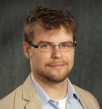
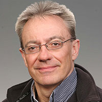
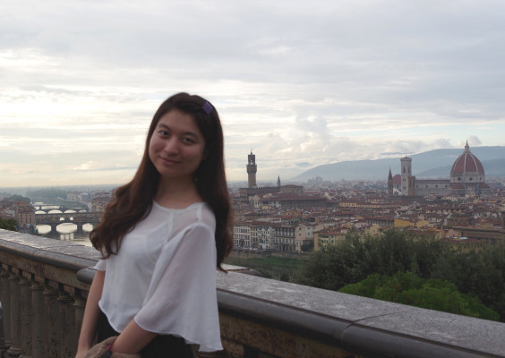

ORGANIZER
Dr.Len Bass
Dr.Len Bass is a Senior Member of the Technical Staff at the Software Engineering Institute (SEI). He has written two award winning books in software architecture as well as several other books and numerous papers in a wide variety of areas of computer science and software engineering. He has been a keynote speaker or a distinguished lecturer on six continents. He is currently working on techniques for the methodical design of software architectures, to understand how to support usability through software architecture, and to understand the relationship between software architecture and global software development practices. He has been involved in the development of numerous different production or research software systems ranging from operating systems to database management systems to automotive systems.
Dr.Christopher J Parnin

Dr.Christopher Parnin is an assistant Professor at Department of Computer Science, North Carolina State University, USA. His research areas cover Graphics, Human Computer Interaction, User Experience, Software Engineering and Programming Languages.
Dr.Bram Adams
Dr.Bram Adams is an assistant professor at Polytechnique Montréal where he heads the MCIS Lab on Maintenance, Construction and Intelligence (MCIS). His research interests vary from release engineering, mining software repositories and green software in particular, to software evolution and reverse-engineering in general.
LOCAL ORGANIZER
Ian Gorton

In June 2015, Dr.Ian Gorton joined Northeastern University in Seattle as the Director of the Computer Science Masters programs. Prior to this role, he worked at the Carnegie Mellon University Software Engineering Institute as a Senior Member of the Technical Staff. He worked on several projects focused on the principles of designing massively scalable software architectures for big data applications.
WEB CHAIR

Yujuan JIANG
I'm a PhD student in MCIS lab, Polytechnique Montreal, Canada, supervised by Prof.Bram Adams.
My research interest is in the domain of release engineering.